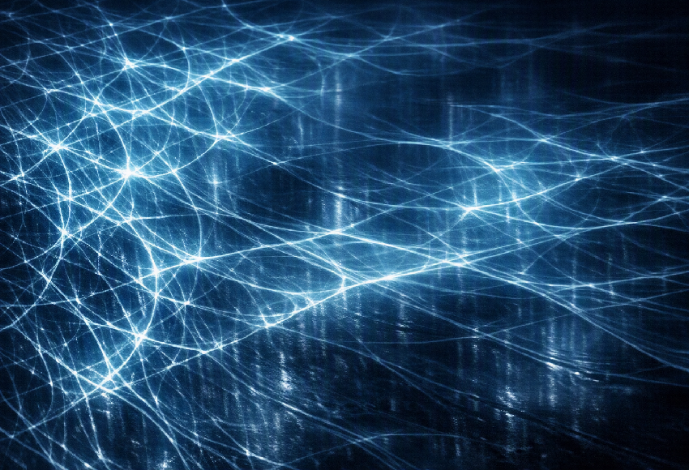
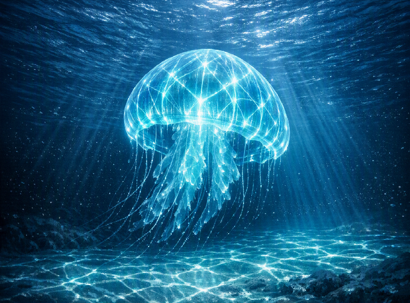

This document proposes the Reflective-Surface Harmonic Field (RSHF) as a speculative resonance-inspired visual framework for readers interested in Deep-Sea Marine Biology, bioluminescence, and underwater optical behavior. Within the Comm-Array / Kutulu engine lineage, RSHF describes a way of imagining shimmering blue-white lattices that resemble caustic light, bioluminescent glow, and hard-surface reflection translated into a readable harmonic pattern.
Within this framework, RSHF remains surface-bound and optical-first, but the lead audience lens is marine: surfaces may be imagined as seafloor planes, shell, glass, instrument housings, water interfaces, or organism-adjacent environments where projected, reflected, or refracted light-pattern behavior can become visually legible.
Audience note: The primary demographic target is Deep-Sea Marine Biology. The work is therefore framed for readers who may be interested in bioluminescence, caustic optics, underwater perception, organism-inspired visual systems, and speculative tools for imagining signals beyond ordinary human visibility.
1. Core Concept: Proto-Resonance Field
Takeaway: RSHF should be treated as a conceptual proto-field. It differs from Spiralwake, Click-Resonance, and Kutulu Resonance within the internal model because its primary interpretive carrier is not literal motion, verified intention, archetypal bias, or measured frequency. Its carrier is imagined pattern density.
2. Placement Within the Resonance Engine
2.1 Spiralwake: Fluid-Space Resonance
- Occurs in open fields
- Driven by drift, expansion, fade
- Resonance is carried by motion
2.2 Click-Resonance: Intentional Resonance
- Occurs at interaction points
- Driven by imagined user intention
- Resonance is represented through frequency-inspired behavior
2.3 Kutulu Resonance: Archetypal Resonance
- Occurs across the triad (Match / Opposition / Neutral / UV)
- Driven by color + intensity
- Resonance is carried by outcome (Z-axis)
2.4 RSHF: Reflective-Surface Resonance
- Occurs on hard surfaces
- Driven by light-interference-inspired imagery
- Resonance is represented through pattern density
RSHF is framed as the first resonance field in this system that is optical-first. Rather than claiming a physical wave mechanism, it uses surface light behavior as a way to make imagined resonance patterns legible.
3. Defining Mechanic: Pattern Density = Interpreted Intensity
In this concept model, the field is not treated as being produced by literal measurements such as:
- physical clicks
- literal droplets
- verified archetypal bias
- measured frequency emission
Instead, the model reads interpreted intensity through how tightly the light-ripple network appears to be woven.
| Pattern State | Interpretive Reading |
|---|---|
| High-density lattice | High interpreted intensity |
| Low-density lattice | Low interpreted intensity |
| Broken lattice | Visually unstable expression |
| Uniform lattice | Visually stable expression |
This gives the model a new visual axis for interpreting intensity, stability, and disruption.

4. Doctrine Seed: Reflective-Surface Harmonic Field
01 · Surface Binding
Within the model, the resonance is considered readable only where light patterns touch or appear across a solid surface. No readable surface ? no visible field expression.
02 · Lattice Formation
Light interference inspires the ripple-lattice. In the RSHF framework, the lattice is treated as the visible expression of the resonance concept.
03 · Density Suggests Intensity
Denser line patterns are interpreted as more intense expressions; fewer lines are interpreted as quieter or weaker expressions.
04 · Disruption Events
Any object entering the imagined field — hand, mouse, device, or shadow — can be represented as causing a local resonance break, which visually propagates outward like a fracture.
For a marine biology audience, disruption events can be imagined through deep-sea contexts: passing bodies, sediment clouds, submersible light beams, shifting currents, shell surfaces, transparent tissues, or plankton-like particle fields that interrupt and reshape the visible lattice.
05 · Archetype Compatibility
- Warner stabilizes the lattice
- Combs disrupts it
- Zann equalizes density
- Marduk appears to override the field within the story logic
This keeps the concept compatible with the existing Kutulu engine as an interpretive layer rather than an empirical mechanism.

5. Development Paths for Deep-Sea Marine Biology Audiences
- A full doctrine
- A resonance interaction table
- A Python simulation loop
- A visual behavior grid
- A sound-integration layer that treats sound as a companion metaphor or design translation
- Fold it into the Comm-Array as a new “optical channel”
Recommended next branches include doctrine expansion, a marine-facing resonance interaction map, a bioluminescence-inspired visual behavior grid, a sound-as-metaphor layer, and integration into the Comm-Array as a conceptual optical channel for deep-sea-themed presentation work.
6. Resonance Jellies: Caustic Resonance for Deep-Sea Contexts
The same optical-first logic can be extended into the Resonance Jellies visual language for deep-sea marine biology audiences. Here, water is used as a conceptual carrier for wave-like behavior, while light reveals that behavior as caustic geometry inspired by bioluminescent glow, translucent tissues, and underwater optical distortion.
This creates a coupled visual model: the water surface suggests physical ripple behavior, while the bright web below is inspired by optical caustics formed through refraction and focusing. The visible filaments are not presented as proof of a hidden wave; they are a design method for visualizing otherwise unseen interaction.
For the resonance system, this distinction establishes a useful rule:
- Ripple = the modeled wave-like behavior
- Caustic web = the modeled behavior becoming visible
- Where two ripples meet, their patterns can overlap, reinforce, or soften one another as part of the visual design.
- Those changed surface patterns can then reshape the caustic-inspired imagery underneath.
Example: If a jelly is designed around an invented pulse value, that value functions as a creative parameter rather than a biological claim. The pulse can be represented as traveling through the water almost invisibly, then appearing as a cyan-white lattice across the jelly’s bell and the seafloor.
System rule: energy enters ? medium responds ? light reveals the response.
This defines caustic resonance as a visualization class within the document: imagined resonance behavior made readable through light geometry produced by a responsive medium.

7. Full Doctrine Expansion for Deep-Sea Marine Biology Audiences
The Reflective-Surface Harmonic Field doctrine treats light not as decoration, but as a conceptual diagnostic layer for marine-facing speculative visualization. A field becomes knowable in this model when a medium translates invisible or imagined behavior into visible geometry. For a deep-sea audience, the medium may be imagined as water, translucent organism tissue, suspended particles, instrument glass, or reflective seafloor material.
7.1 Field Conditions
An RSHF scene is imagined as working best with three conceptual conditions: an active light source or glow, a responsive surface or medium, and a carrier disturbance that appears capable of bending, scattering, or concentrating the light. In a deep-sea framing, these may be represented by bioluminescence-inspired glow, water movement, suspended particles, translucent tissues, or reflective terrain.
7.2 Density Grammar
Density functions as the grammar of the field within this speculative framework. Dense regions act like emphasized phrases, sparse regions act like silence or drift, breaks act like punctuation, and uniform bands act like declarative stability. This allows the lattice to be read as both image and symbolic language.
7.3 Archetypal Behavior
| Archetype | RSHF Behavior | Visual Signature |
|---|---|---|
| Warner | Appears to stabilize the lattice and reduce fracture spread within the story logic. | Even, calm, continuous blue-white lines. |
| Combs | Appears to disrupt the lattice and introduce sharp discontinuity. | Broken shards, angular gaps, sudden brightness spikes. |
| Zann | Appears to equalize density and smooth asymmetry. | Balanced mesh with slow breathing motion. |
| Marduk | Appears to override local field logic and impose command structure within the internal mythology. | Dominant central beam or imposed geometric order. |
7.4 Marine-Facing Interaction Rules
- Contact: can be represented as a body, fin, shell, instrument, or terrain edge compressing density around the point of entry.
- Shadow: can be represented as a submersible, organism silhouette, sediment cloud, or terrain feature subtracting information from the lattice.
- Reflection: can be represented through shell material, instrument glass, wet stone, water-surface mirroring, or mineral surfaces suggesting false harmonics.
- Motion: can be represented as current, drift, pulse, fin movement, or water-column shear causing the lattice to breathe or reshape.
- Water: remains the primary translation medium, turning optical-first logic into caustic-resonance imagery for deep-sea presentation contexts.
7.5 Doctrine Principle
Doctrine principle: a speculative resonance field becomes doctrine when its imagined behavior develops a repeatable visible grammar.